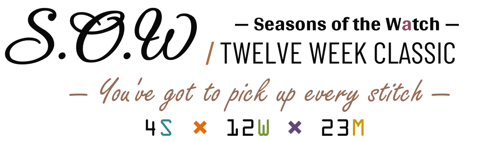
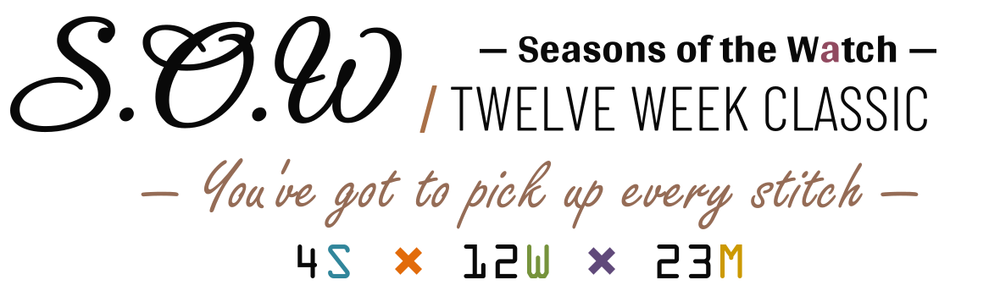
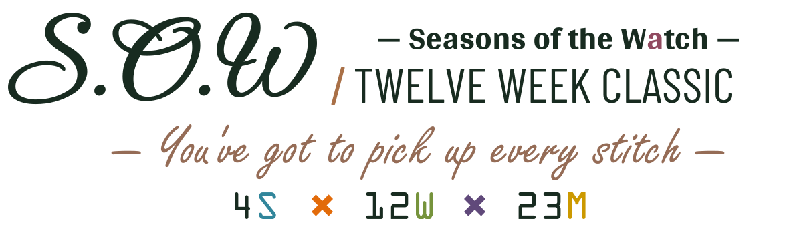
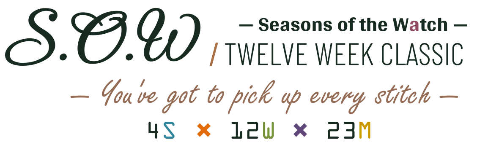

S.O.W · R30 TYPE REFINEMENT
Identical embroidery and geometry. Compare black / near-black green and Barlow Condensed Regular / Light. Motto is larger and copper, the title hierarchy is quieter, and both multiplication signs are aligned to the number row.
A · BLACK / REGULAR


B · BLACK / LIGHT

C · NEAR-BLACK GREEN / REGULAR

D · NEAR-BLACK GREEN / LIGHT
